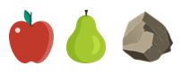

Yale Computation and Cognitive Development Lab
In this experiment, you will be presented with interactions between two agents and asked about what they think. The HIT should take about 10 minutes. Please pay attention, thanks!
Legal information: By answering the following questions, you are participating in a study being performed by cognitive scientists in the Yale University Department of Psychology. If you have questions about this research, please contact Michael Lopez-Brau at michael.lopez-brau@yale.edu or Julian Jara-Ettinger, at julian.jara-ettinger@yale.edu. You must be at least 18 years old to participate. Your participation in this research is voluntary. You may decline to answer any or all of the following questions. You may decline further participation, at any time, without adverse consequences. Your anonymity is assured; the researchers who have requested your participation will not receive any personal information about you.
is a farmer on the mountainous countryside of a town. Among the crops tends to are apples and pears. One day, notices that hikers have established a hiking route near apple and pear groves and occasionally take some fruit while passing by. doesn’t mind that hikers take some fruit but prefers that hikers take apples since pears are out-of-season.
Because the hikers that hike along this route are regulars, knows when these hikers stop by groves and which fruit different hikers prefer. Depending on the hiker, takes different actions to ensure that they will take apples instead of pears.
Since doesn't have time to drive to town to pick up signs, lines up some boulders to make sure that the hikers do not get the pears. The hikers always notice the boulders because they have to walk around them to get to the grove but not all hikers realize that placed these boulders. Some hikers think that the boulders were there naturally.
finds it very exhausting to arrange the boulders. They're difficult to move, so doesn’t always use the most boulders can. also knows that different hikers are more or less likely to realize that arranged the boulders, and takes this into account when deciding what to do.
This is , one of the hikers that regularly hikes on this path. On each trial, you will be asked to put yourself in 's (the farmer's) shoes. You will be asked how much thought wanted a particular fruit. You will also be asked how much thought would realize that the boulders were placed by instead of being there naturally.
Above are the objects that will encounter while traversing through a grid map. Keep in mind that can move horizontally or vertically on the grid and on the squares that have the apple or pear. cannot move diagonally or on the squares that have rocks.
For example, observe below:
There are trials in total. Press "Continue" to begin.
Please adjust both sliders before continuing.
Answering these questions is optional, but will help us understand your answers.
Did you read the instructions and do you think you did the HIT correctly?
Were there any problems or bugs in the experiment?
What do you think is a fair price for the work you did?
Gender:
Age:
Level Of Education:
Native Language:
Did you enjoy the hit?
Any additional comments about this experiment:
Thank you for your time!